Alpha Shapes
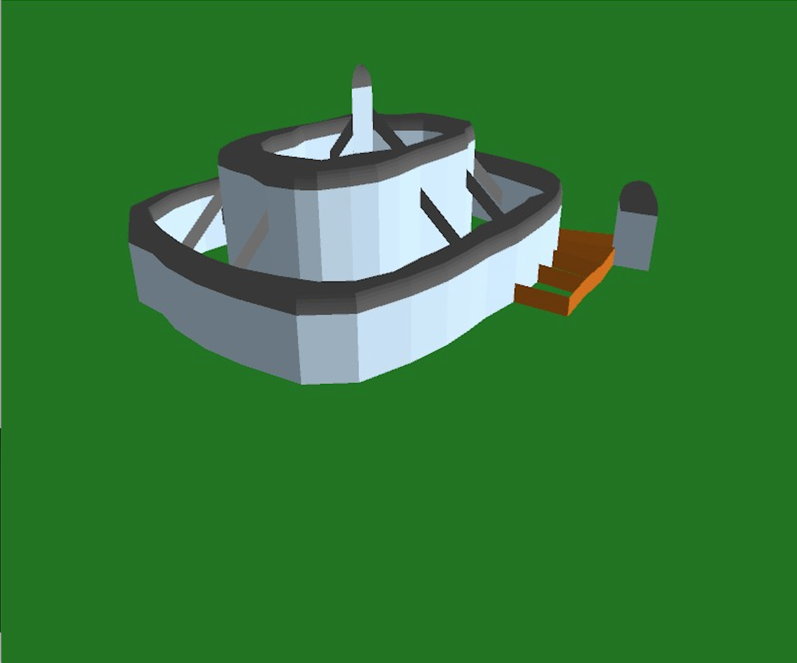
Controls:
2D Mode:
A + Click: Add new node
Click + Drag: Move node
=: Increase radius of Alpha disk (coarser regions)
-: Decrease radius of Alpha disk (finer regions)
0: Reset Alpha disk to default V: Toggle 2D/3D mode
C: Toggle coloring interior regions
F: Toggle fast mode (only renders once upon state change)
1-9: Load presets
3D Mode:
Mouse: Move camera
V: Toggle 2D/3D mode
Concept:
This project uses the a user-created Alpha Shape to automatically generate structures with covered interiors. An Alpha Shape is defined by the half-edge exposure of all vertices given an Alpha radius. A half-edge is defined by the oriented line from one vertex to another. A half-edge is exposed if no vertices are members of the disk of radius Alpha whose center lies on the right of the half-edge. The output Alpha shape represents this exposure and additionally labels non-manifold vertices, those with more than two exposed incident half-edges, within the shape. The half-edge exposure cluster vertices into “interior” components densely populated with vertices. The exposed half-edges form the boundary between interior components and the exterior. Dangling vertices, having only one or two immediate neighbors, are considered part of a boundary. Different components have all vertices farther than Alpha radius distance from all other components.
Once the Alpha Shape is created, we create a 3D render of a structure using specifics gathered from the Alpha Shape representation. The walls of the structure are placed along the boundary of the Alpha Shape’s faces, which are enclosed by loops of oriented edges which are not Alpha-Exposed. Fences are placed along opposing Alpha-Exposed oriented edge pairs. Roofs are constructed above face interiors such that all interior space will be covered by roof and all walls of a given face are connected to one another by sharing roofs. The interior/exterior decision is made on the fly by a tree-traversal of the loop structure in the Alpha Shape. The roofs are constructed out of a pseudo-offset method in which each segment of the roof is formed by moving each vertex along the vertex normal in the interior direction until a collision occurs.
Credits:
Team Member: Sree Ganeshji
Base Code: Prof. Jarek Rossignac
Processing.org
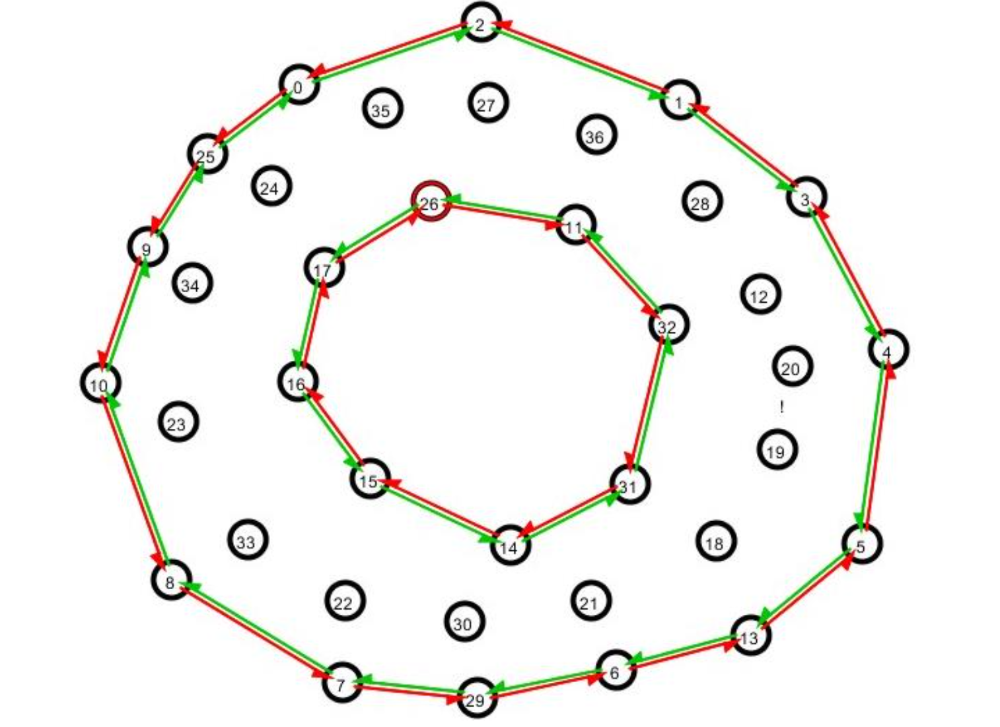
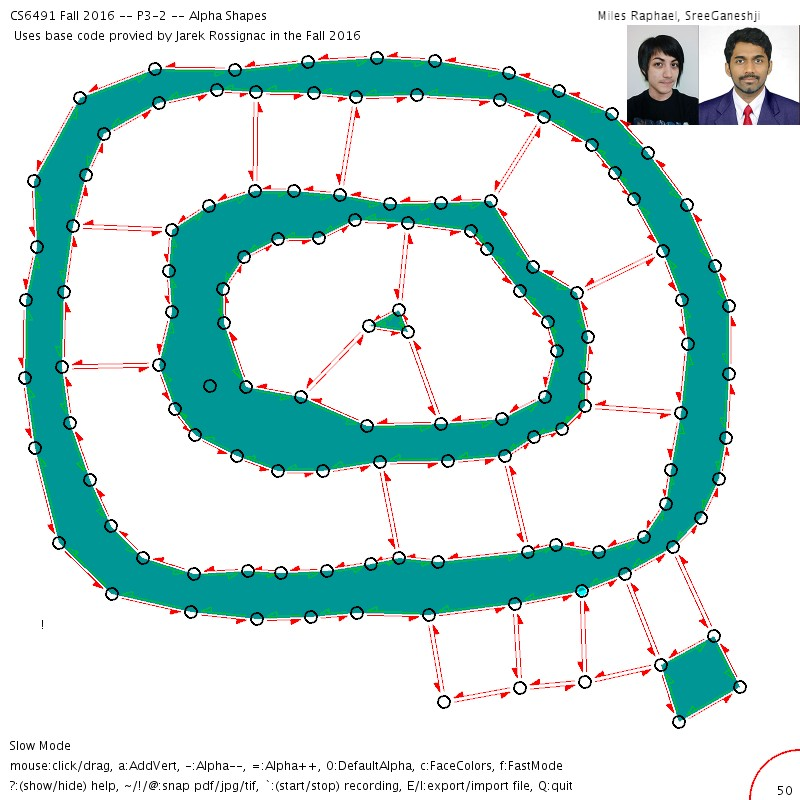
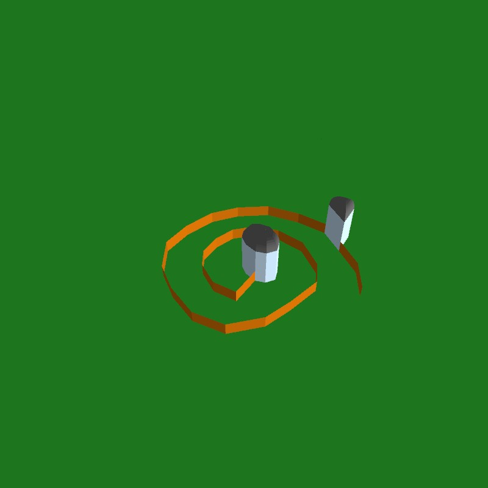
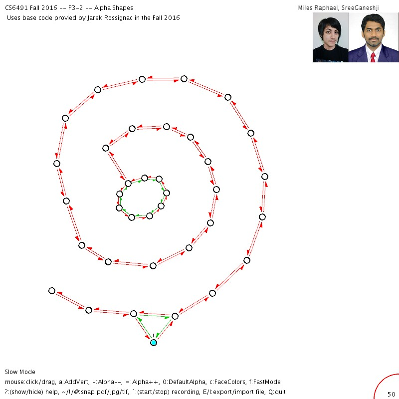
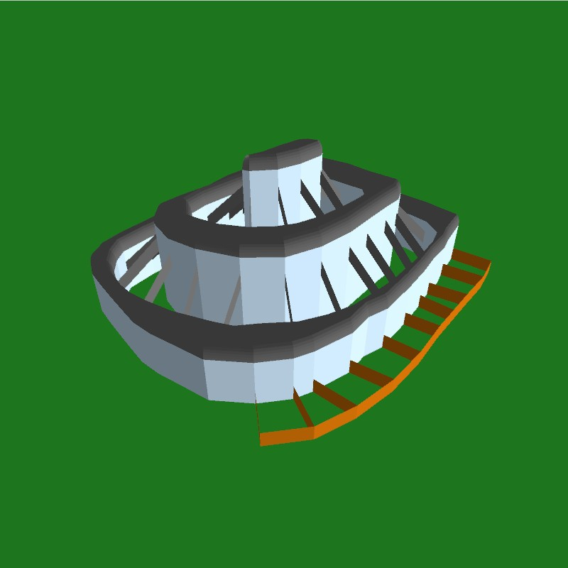
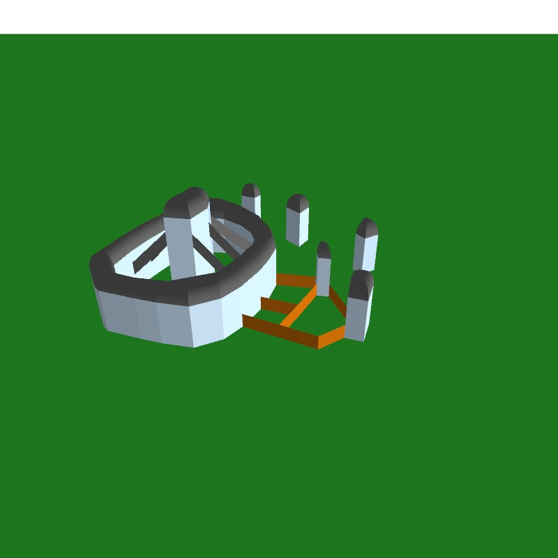
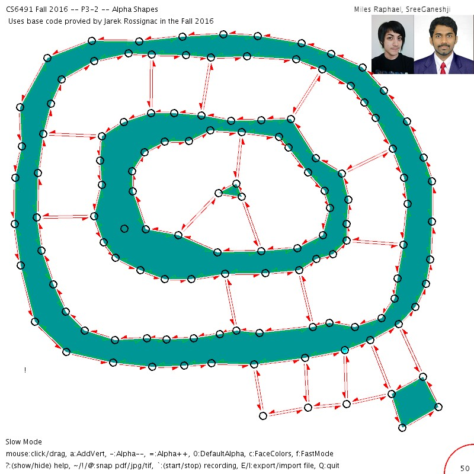
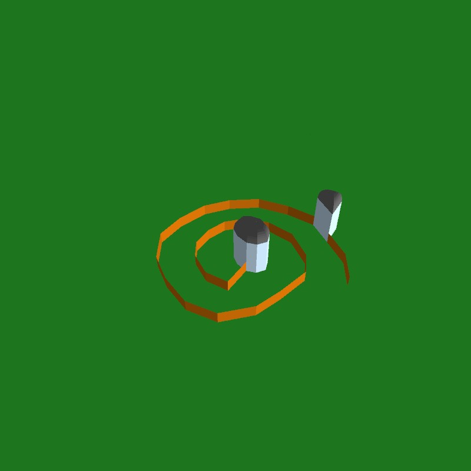
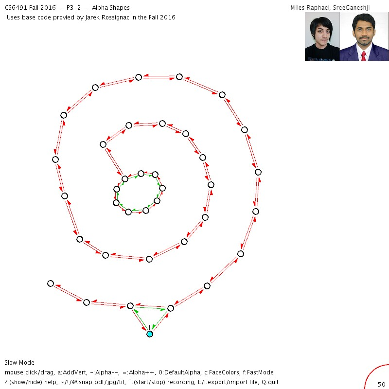
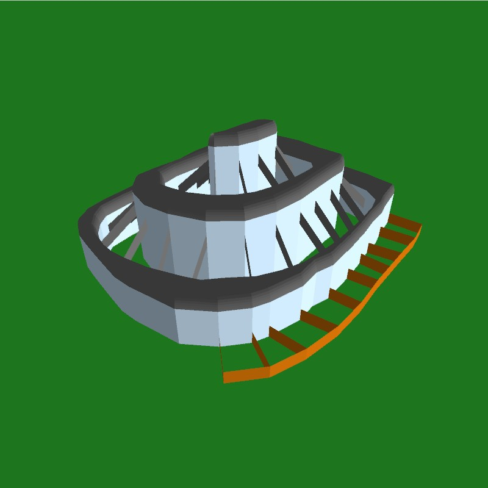
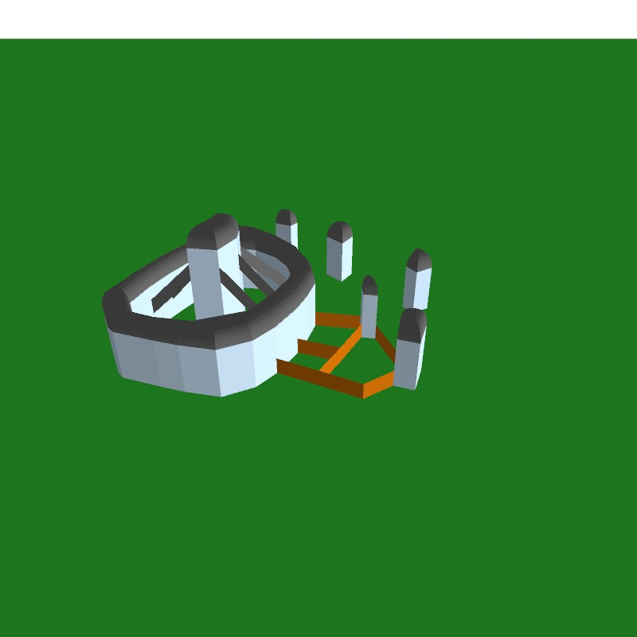